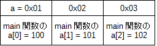
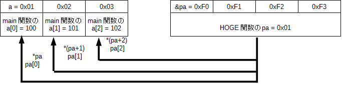
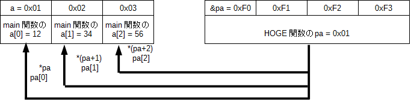
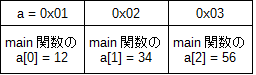

次は「ポインタ渡し」の一種である「配列渡し」について紹介します。
「配列渡し」は「ポインタ渡し」の一種でポインタ変数を引数として使うことは同じですが、呼び出し元の実引数が変数ではなくて配列であるという違いがあります。では定義と例を見てみましょう。
引数の型 *引数名
(定義の例)
※ int *pa が引数定義
void HOGE( int *pa )
{
※ 関数の中で引数を使いたい時は *(pa+i)記法 や pa[i] 記法の好きな方を使う
printf( "%d\n", *(pa+1) );
pa[2] = 1;
}
(関数の呼び出し方の例)
int a[10];
※ 配列の先頭アドレスを渡す(アドレス演算子 & を配列名の前に付けない)
HOGE( a );
繰り返しますが「配列渡し」は「ポインタ渡し」の一種ですのでメリット・デメリットも「ポインタ渡し」とほぼ同じです。つまり、
関数の中で呼び出し元の配列(実引数)の各要素の値を取得したり変更したり出来る
というメリットがあります。
上で説明したポインタ変数を引数とする配列渡しの方法以外にも次のような記法があります。
(1) 引数の型 *引数名
※ 上で説明したポインタ変数を使う方法です。
(2) 引数の型 引数名[要素数]
※ 呼び出し元の配列の要素数と合わせる必要があります。
(3) 引数の型 引数名[]
(記法 1 の例)
※ int *pa が引数定義
void HOGE( int *pa )
{
略
}
(記法 2 の例)
※ int pa[10] が引数定義
void HOGE( int pa[10] )
{
略
}
(記法 3 の例)
※ int pa[] が引数定義
void HOGE( int pa[] )
{
略
}
※ 関数の呼び出し方はどの記法も同じ
呼び出し元の配列が 1 次元配列ならどの記法を使っても同じ結果になりますので(※)基本的に好みの記法を使って結構です。
※ 呼び出し元の配列が 2 次元配列などの多次元配列になると結果が変わってくるので注意が必要です。
では「配列渡し」の動作についてメモリ空間を使って説明して行きます。
まずは以下のソース1を実行して下さい。
#include <stdio.h>
void HOGE( char *pa ) // ← ポインタ渡しと同じく * 付き
{
// ☆2
pa[0] = 12; // ← *(pa+i)記法 と pa[i] 記法の好きな方を使える
*(pa+1) = 34; // ← *(pa+i)記法 と pa[i] 記法の好きな方を使える
pa[2] = 56; // ← *(pa+i)記法 と pa[i] 記法の好きな方を使える
// ☆3
}
int main()
{
char a[3];
a[0] = 100; // a[0] に 100 を代入する
a[1] = 101; // a[1] に 101 を代入する
a[2] = 102; // a[2] に 102 を代入する
// ☆1
HOGE( a ); // ← ポインタ渡しと違って配列の先頭アドレスを渡す
// ☆4
printf("a[0] = %d\n", a[0] ); // 12 と表示される
printf("a[1] = %d\n", a[1] ); // 34 と表示される
printf("a[2] = %d\n", a[2] ); // 56 と表示される
return 0;
}
では動作解説します。
ソース 1 の main 関数から始まって ☆1 まで進んだとします。 すると ☆1 時点におけるメモリ空間の状態は図1の様になります。
まだ HOGE 関数の中に入っていませんので、「main 関数の配列 a」だけが定義され、各配列要素にはそれぞれ 100、101、102 が入っています。
※ 例なのでアドレスは適当です。
このまま HOGE 関数の中の ☆2 までプログラムを進めてみます。
HOGE 関数の引数としてポインタ変数「char *pa」が指定されており、 更に main 関数から HOGE 関数を呼び出す時に a の先頭アドレスが渡されていますので、「ポインタ渡し」の時と同様に
HOGE 関数に入る直前に char 型のポインタ変数 pa が作られ、「main 関数の配列 a」の先頭アドレスが「 HOGE 関数のポインタ変数 pa 」に代入されます。
その結果 ☆2 時点におけるメモリ空間の状態は図2の様になります。
※ 例なのでアドレスは適当です。
そのまま ☆3 まで進みます。
☆3 の直前の 3 行を使って *(pa+i)記法 と pa[i] 記法を使って値が代入されていますが、
pa[0] は「main 関数の a[0] 」を参照している(矢印で指し示している)ので「main 関数の a[0] 」に 12 が入ります。
*(pa+1) は「main 関数の a[1] 」を参照している(矢印で指し示している)ので「main 関数の a[1] 」に 34 が入ります。
pa[2] は「main 関数の a[2] 」を参照している(矢印で指し示している)ので「main 関数の a[2] 」に 56 が入ります。
従って ☆3 時点におけるメモリ空間の状態は図 3 の様になります。
※ 例なのでアドレスは適当です。

では HOGE 関数を抜けて main 関数に戻り、☆4 まで進みます。
HOGE 関数を抜けた瞬間に「HOGE 関数のポインタ変数 pa 」は消えて無くなりますので、よって ☆4 時点におけるメモリ空間の状態は図 4 の様になります。
※ 例なのでアドレスは適当です。
以上の説明から、「配列渡し」を使うと、関数の中から元の配列の値も変えることが出来ることが理解できたと思います。